Explore Wildlife by Category
Select a category to discover animals from different kingdoms
Mammals of the Savannah
A collection of iconic African mammals presented as high-contrast editorial cards with quick facts and conservation context.

Black Rhinoceros
Critically Endangered
Scientific Name: Diceros bicornis
Conservation Status: Critically Endangered
Weight Range: 1,800 - 3,100 lbs (800 - 1,400 kg)
Key Detail: They have a hooked, prehensile upper lip used like a thumb to strip leaves and twigs from branches.
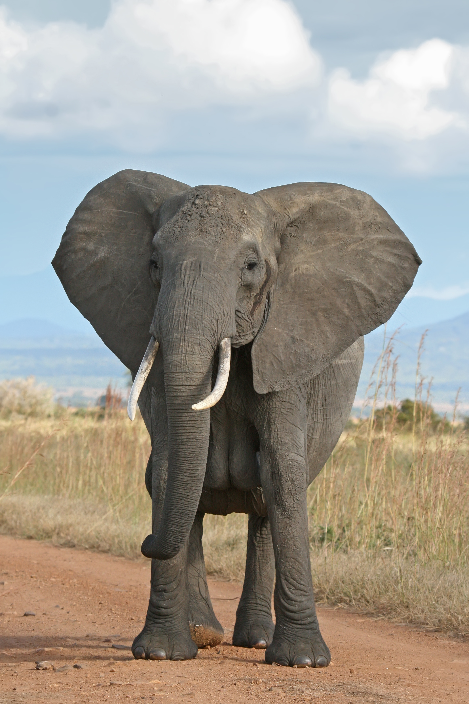
Elephant
Endangered
Scientific Name: Loxodonta africana
Conservation Status: Endangered
Weight Range: 4 - 7 tons (3,600 - 6,300 kg)
Key Detail: Their massive ears act like built-in air conditioners. By flapping them, elephants can cool down the blood flowing through the large vessels in their ears to drop their body temperature.

Lion
Vulnerable
Scientific Name: Panthera leo
Conservation Status: Vulnerable
Weight Range: 330 - 550 lbs (150 - 250 kg)
Key Detail: A male's mane isn't just for show; a darker, thicker mane indicates top health and higher testosterone, which helps them attract mates and intimidate rivals.

Leopard
Vulnerable
Scientific Name: Panthera pardus pardus
Conservation Status: Vulnerable
Weight Range: 65 - 200 lbs (30 - 90 kg)
Key Detail: To protect their food from scavengers like lions and hyenas, leopards can haul prey weighing as much as themselves entirely up into the branches of trees.

Cheetah
Vulnerable
Scientific Name: Acinonyx jubatus
Conservation Status: Vulnerable
Weight Range: 46 - 158 lbs (21 - 72 kg)
Key Detail: Built for speed and agility, cheetahs can accelerate from 0 to 60 mph in just 3 seconds.

Giraffe
Vulnerable
Scientific Name: Giraffa camelopardalis
Conservation Status: Vulnerable
Weight Range: 1,750 - 2,800 lbs (794 - 1,270 kg)
Key Detail: Kenya’s tall icon, shaped for browsing treetops and spotting movement across open country.
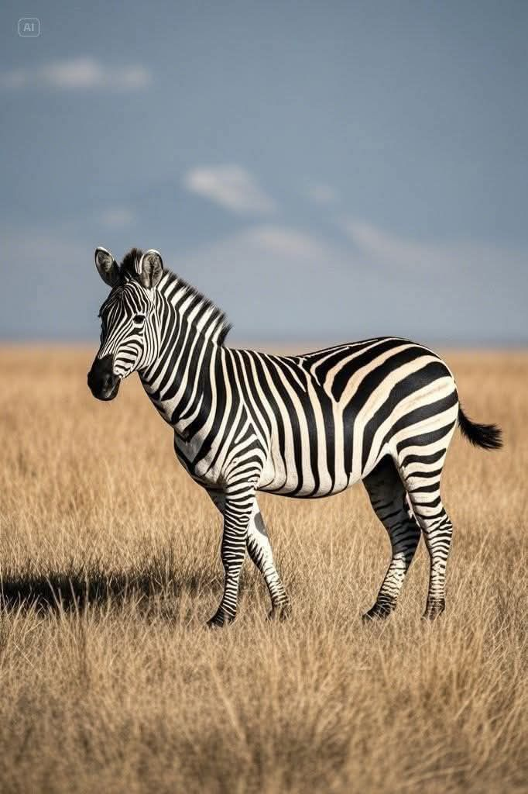
Zebra
Near Threatened
Scientific Name: Equus quagga
Conservation Status: Near Threatened
Weight Range: 440 - 990 lbs (200 - 450 kg)
Key Detail: Every zebra has a unique stripe pattern, much like human fingerprints, which helps them recognize each other.

Buffalo
Near Threatened
Scientific Name: Syncerus caffer
Conservation Status: Near Threatened
Weight Range: 1,100 - 2,200 lbs (500 - 1,000 kg)
Key Detail: An adult male's massive horns fuse to form a 'boss' that can even stop bullets.
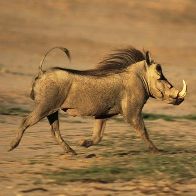
Warthog
Least Concern
Scientific Name: Phacochoerus africanus
Conservation Status: Least Concern
Weight Range: 110 - 330 lbs (50 - 150 kg)
Key Detail: Warthogs can run up to 30 mph (48 km/h) and often use abandoned aardvark burrows for shelter.
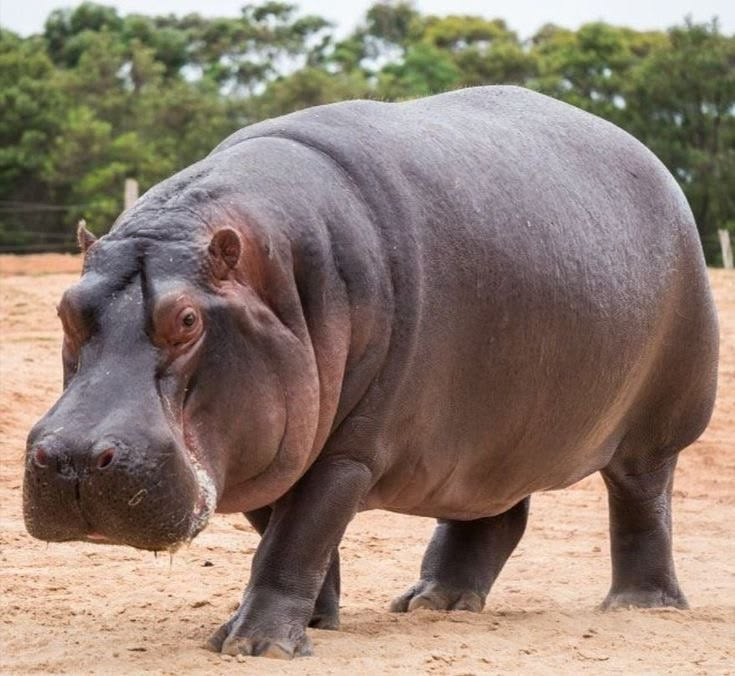
Hippopotamus
Vulnerable
Scientific Name: Hippopotamus amphibius
Conservation Status: Vulnerable
Weight Range: 2,900 - 4,000 lbs (1,300 - 1,800 kg)
Key Detail: Despite their bulky appearance, hippos can run faster than humans on land and spend up to 16 hours a day submerged in water to keep cool.
Birds of the Skies
A selection of notable bird species found across Africa with quick facts and habitat notes.

Secretarybird
Vulnerable
Scientific Name: Sagittarius serpentarius
Conservation Status: Vulnerable
Weight Range: 4.9 - 7.3 lbs (2.2 - 3.3 kg)
Key Detail: Long-legged terrestrial bird of prey known for hunting snakes and other small vertebrates.

African Fish Eagle
Least Concern
Scientific Name: Haliaeetus vocifer
Conservation Status: Least Concern
Weight Range: 4.4 - 7.9 lbs (2.0 - 3.6 kg)
Key Detail: Frequently seen perched near large water bodies where it hunts fish and small waterbirds.

Lilac-breasted Roller
Least Concern
Scientific Name: Coracias caudatus
Conservation Status: Least Concern
Weight Range: 0.24 - 0.28 lbs (110 - 130 g)
Key Detail: Colorful insectivore often seen perched in open country before swooping on prey.
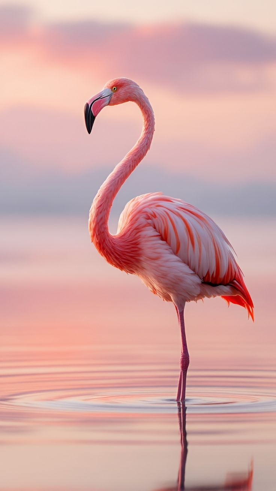
Greater Flamingo
Least Concern
Scientific Name: Phoenicopterus roseus
Conservation Status: Least Concern
Weight Range: 4.4 - 8.8 lbs (2.0 - 4.0 kg)
Key Detail: Pink wader that feeds by filtering small invertebrates and algae from shallow waters.

Ostrich
Least Concern
Scientific Name: Struthio camelus
Conservation Status: Least Concern
Weight Range: 139 - 320 lbs (63 - 145 kg)
Key Detail: Largest living bird; adapted to open plains with strong legs for running.
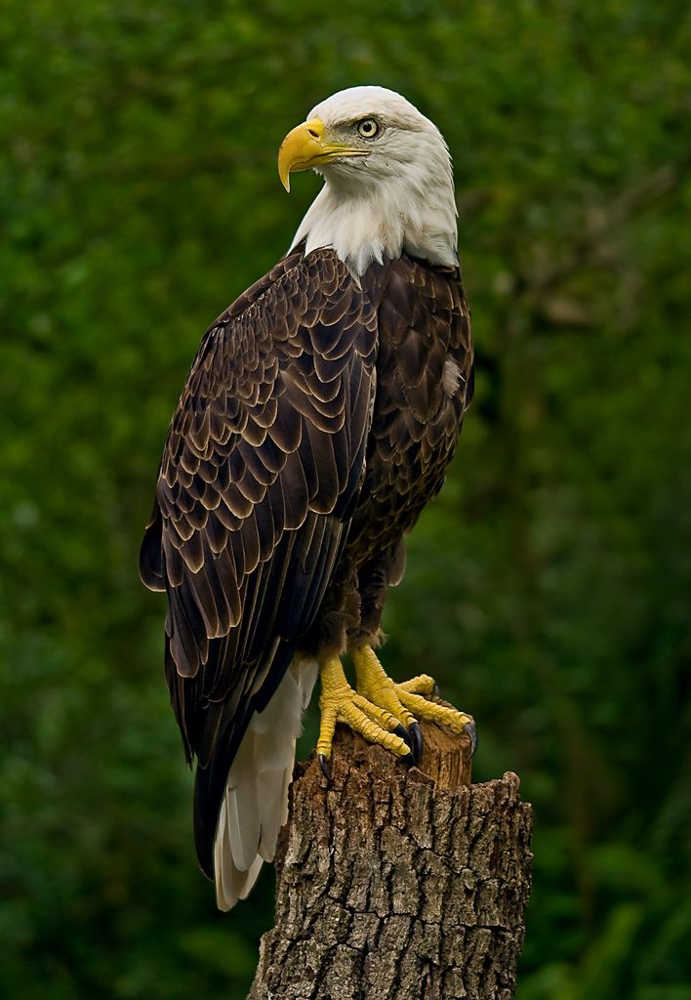
Eagle
Least Concern
Scientific Name: Aquila chrysaetos (Golden Eagle example)
Conservation Status: Least Concern
Weight Range: 6.6 - 13.9 lbs (3.0 - 6.3 kg)
Key Detail: Eagles have powerful eyesight, up to 4-8 times stronger than humans, enabling them to spot prey from great distances.
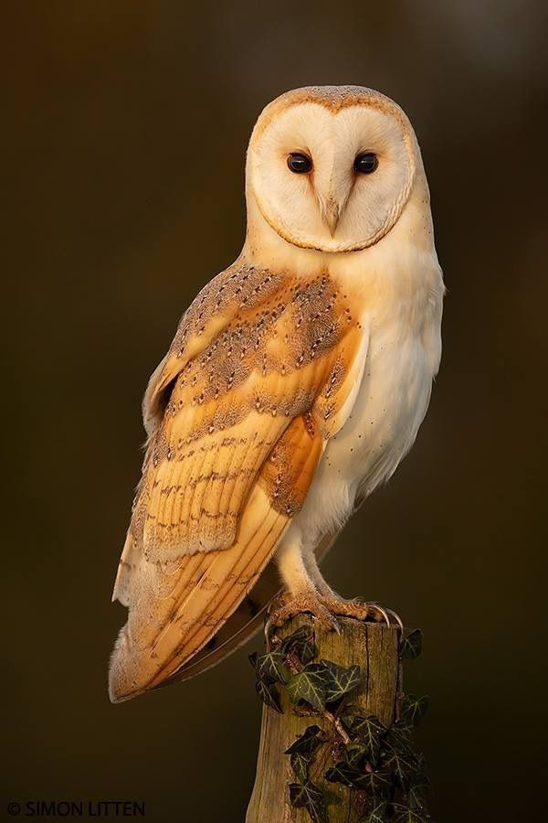
Owl
Least Concern
Scientific Name: Bubo bubo (Eurasian Eagle-Owl example)
Conservation Status: Least Concern
Weight Range: 3.2 - 8.8 lbs (1.5 - 4.0 kg)
Key Detail: Owls have specialized feathers that allow them to fly almost silently, helping them sneak up on prey.
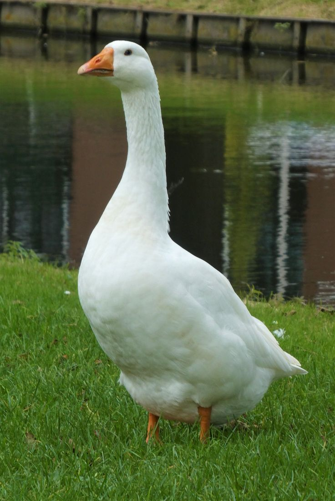
Goose
Least Concern
Scientific Name: Anser anser (Greylag Goose example)
Conservation Status: Least Concern
Weight Range: 5.5 - 8.8 lbs (2.5 - 4.0 kg)
Key Detail: Geese are highly social and mate for life, often forming strong family bonds within their flocks.
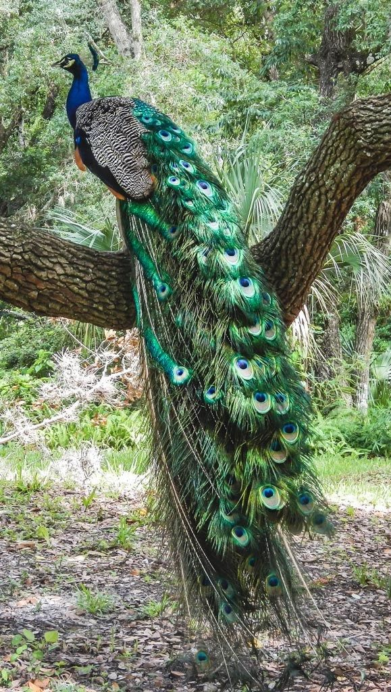
Peacock
Least Concern
Scientific Name: Pavo cristatus
Conservation Status: Least Concern
Weight Range: 8.8 - 13.2 lbs (4.0 - 6.0 kg)
Key Detail: The male peacock's vibrant tail feathers are used in elaborate courtship displays to attract mates.
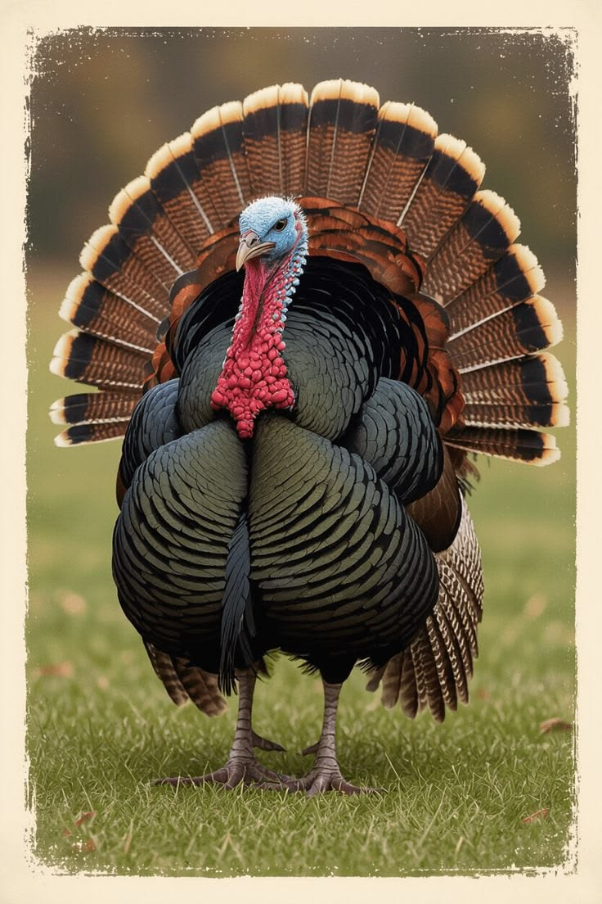
Turkey
Least Concern
Scientific Name: Meleagris gallopavo
Conservation Status: Least Concern
Weight Range: 5.5 - 24.0 lbs (2.5 - 11.0 kg)
Key Detail: Turkeys can run at speeds of up to 25 mph (40 km/h) and are surprisingly agile fliers for short distances.

White-headed Eagle
Least Concern
Scientific Name: Ichthyophaga ichthyaetus (Grey-headed Fish Eagle example)
Conservation Status: Least Concern
Weight Range: 4.4 - 6.6 lbs (2.0 - 3.0 kg)
Key Detail: The white head and tail of this eagle develop as the bird matures, appearing at around 4-5 years of age.
Reptiles & Amphibians
Cold-blooded wonders of Africa's diverse ecosystems.

Nile Crocodile
Least Concern
Scientific Name: Crocodylus niloticus
Conservation Status: Least Concern
Weight Range: 500 - 1,650 lbs (227 - 750 kg)
Key Detail: Large aquatic predator frequenting rivers, lakes and wetlands across Africa, known for its powerful jaws and ambush hunting tactics.

African Rock Python
Least Concern
Scientific Name: Python sebae
Conservation Status: Least Concern
Weight Range: 70 - 120 lbs (32 - 55 kg)
Key Detail: Large non-venomous constrictor found in a variety of habitats from savannah to woodland, killing prey through constriction.

Puff Adder
Least Concern
Scientific Name: Bitis arietans
Conservation Status: Least Concern
Weight Range: 2.2 - 4.4 lbs (1.0 - 2.0 kg)
Key Detail: Common and widely distributed venomous viper that relies on camouflage and ambush hunting, responsible for more snakebite fatalities in Africa than any other species.

Nile Monitor
Least Concern
Scientific Name: Varanus niloticus
Conservation Status: Least Concern
Weight Range: 13 - 20 lbs (6 - 9 kg)
Key Detail: Large agile lizard often seen near water, feeding on a wide range of prey and known for its aquatic foraging abilities and climbing skills.
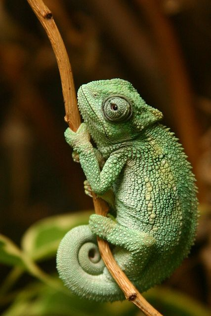
Chameleon
Least Concern
Scientific Name: Chamaeleo calyptratus (Veiled Chameleon example)
Conservation Status: Least Concern
Weight Range: 0.15 - 0.26 lbs (70 - 120 g)
Key Detail: Chameleons can move each eye independently and have tongues that can be longer than their bodies to catch prey, with specialized feet for gripping branches.
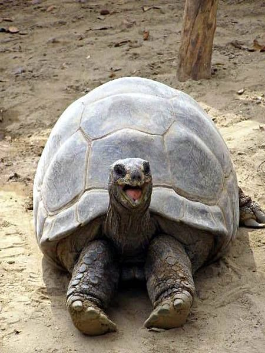
Tortoise
Least Concern
Scientific Name: Geochelone sulcata (African Spurred Tortoise example)
Conservation Status: Least Concern
Weight Range: 70 - 100 lbs (32 - 45 kg)
Key Detail: Some tortoise species can live over 100 years and are known for their slow but steady pace of life, with the African spurred tortoise being the third-largest tortoise species in the world.

African Bullfrog
Least Concern
Scientific Name: Pyxicephalus adspersus
Conservation Status: Least Concern
Weight Range: 1.1 - 2.0 lbs (500 - 900 g)
Key Detail: Large burrowing frog that estivates during dry seasons and emerges to breed in temporary pools.
Image credit: Dezidor, CC BY 3.0, via Wikimedia Commons
Aquatic Life
Fish, large semi-aquatic mammals and reef life that shape freshwater and coastal ecosystems.
Hippopotamus
Vulnerable
Scientific Name: Hippopotamus amphibius
Conservation Status: Vulnerable
Weight Range: 2,900 - 4,000 lbs (1,300 - 1,800 kg)
Key Detail: Despite their bulky appearance, hippos can run faster than humans on land and spend up to 16 hours a day submerged in water to keep cool.
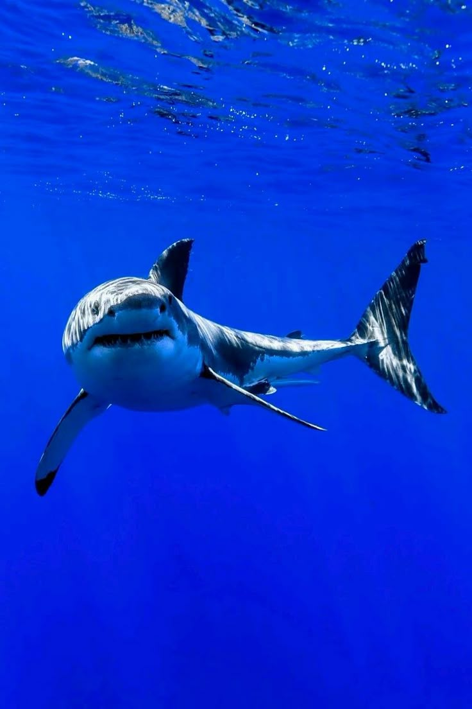
Shark
Least Concern
Scientific Name: Selachimorpha
Conservation Status: Least Concern
Weight Range: 200 - 500 lbs (90 - 227 kg)
Key Detail: Sharks have been around for over 400 million years and possess a skeleton made entirely of cartilage.

Nile Tilapia
Least Concern
Scientific Name: Oreochromis niloticus
Conservation Status: Least Concern
Weight Range: 1.0 - 2.2 lbs (0.5 - 1.0 kg)
Key Detail: Important freshwater fish both ecologically and for local fisheries.

Nile Perch
Least Concern
Scientific Name: Lates niloticus
Conservation Status: Least Concern
Weight Range: 20 - 40 lbs (9 - 18 kg)
Key Detail: Large freshwater predator introduced or native in some large lakes; influential in fish community dynamics.

Coral Reefs
Least Concern
Scientific Name: Various corals
Conservation Status: Least Concern
Key Detail: Complex marine ecosystems supporting high biodiversity; sensitive to warming and local stressors.
Plants & Fungi
A selection of important plants and fungi from regional ecosystems.

Baobab
Least Concern
Scientific Name: Adansonia digitata
Conservation Status: Least Concern
Key Detail: Iconic broad-trunked trees that store water and support wildlife; culturally important across Africa.

Acacia
Least Concern
Scientific Name: Acacia senegal
Microorganisms
Microscopic life is essential for ecosystems; here are basic notes and links for further reading.

Escherichia coli
Model
Scientific Name: Escherichia coli
Habitat: Gut bacterium
Key Detail: